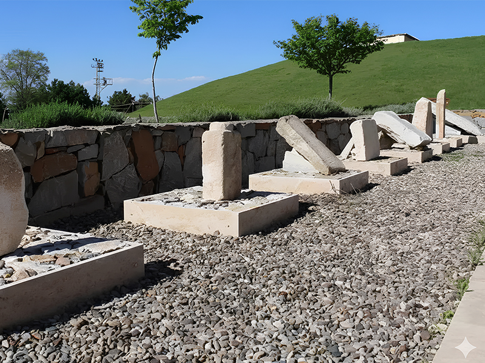
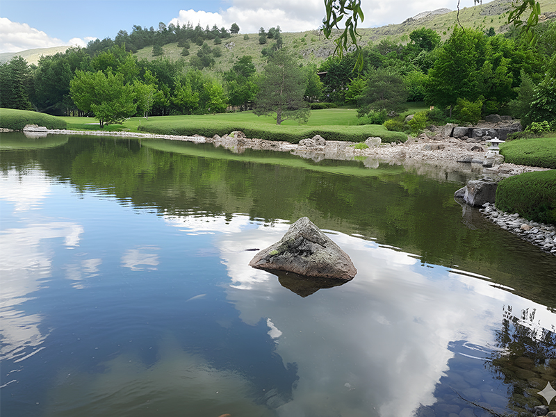
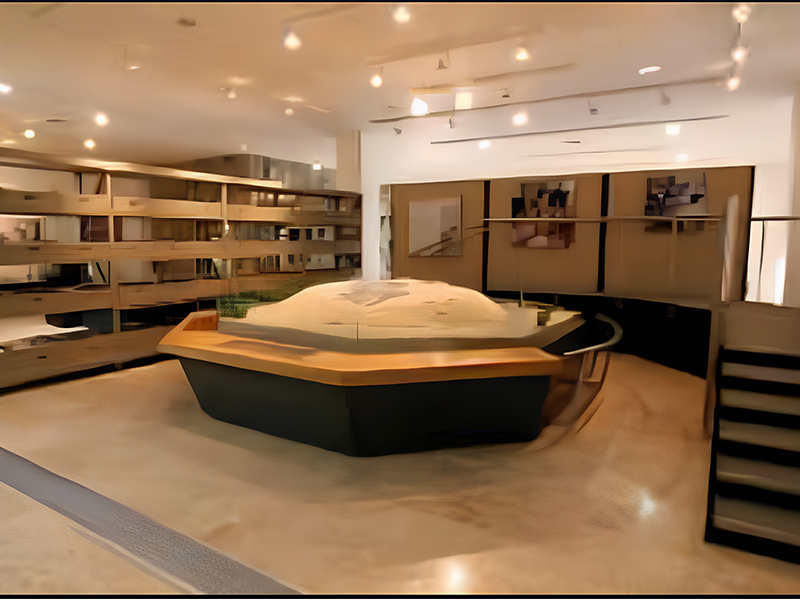
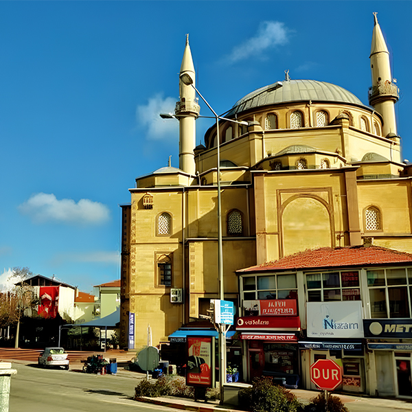
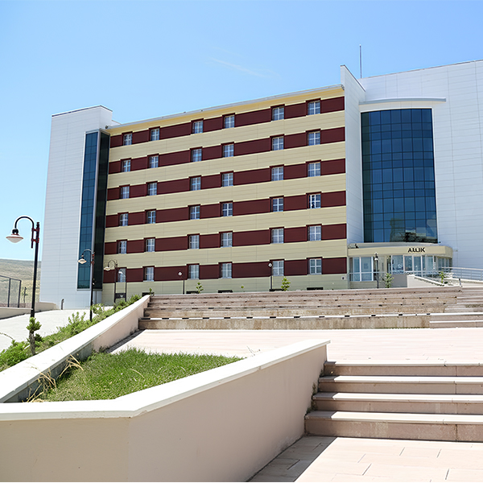
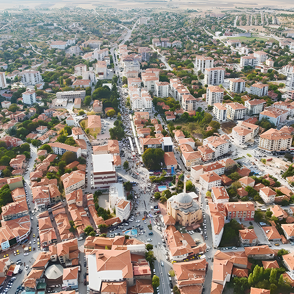

Kaman Uygulamalı Bilimler Yüksekokulu, uygulama odaklı eğitim anlayışıyla öğrencilerini sadece mesleğe değil, hayata hazırlar. Kalehöyük kazılarıyla dünya arkeoloji tarihine yön veren Kaman'da, tarihin sessiz tanıklığı altında modern bir eğitim alırsınız.
Japon Bahçesi'nin dinginliği, cevizin bereketi ve Hititlerin mirası ile harmanlanmış bir kampüs yaşamı sizi bekliyor.

Türkiye'nin en büyük Japon Bahçesinde huzuru ve estetiği bir arada yaşayın.

Dünyaca ünlü Kaman cevizinin bereketiyle yoğrulmuş zengin bir yerel kültür.
Modern laboratuvarlar ve sosyal alanlarla desteklenmiş dinamik üniversite hayatı.
Hititlerden Osmanlılara, 5000 yıllık bir medeniyet serüveninin kalbindeyiz. Kaman UBYO öğrencileri için tarih sadece bir ders değil, her gün yürüdükleri bir yoldur.


